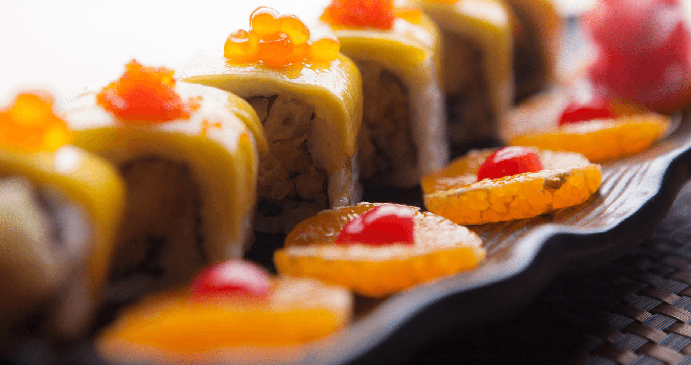

LOGO
竹叶网
登录 ⁄ 注册

首页
关于我们
我们的菜单
我们的文化
加入我们
联系方式
喜欢收藏
竹叶网a2b网络即将上线，敬请期待！
给我们建议
农产品
采用来自贵州新鲜无公害蔬菜花果经多重清洗程序，确保广大用户饮食安全，经来自意大利厨师亲手制作，味道美味可口让您尽享美食。
农产地
采用来自贵州新鲜无公害蔬菜花果经多重清洗程序，确保广大用户饮食安全，经来自意大利厨师亲手制作，味道美味可口让您尽享美食。
农业信息
采用来自贵州新鲜无公害蔬菜花果经多重清洗程序，确保广大用户饮食安全，经来自意大利厨师亲手制作，味道美味可口让您尽享美食。
特殊感谢
为感谢全国用户多年来对我们的大力支持，我们特别推出一系列特色美食，以优惠的价格回顾顾客，让顾客可以少花钱，多享受，轻松快